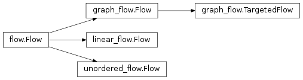

Patterns¶
-
class
taskflow.flow.Flow(name, retry=None)[source]¶ Bases:
objectThe base abstract class of all flow implementations.
A flow is a structure that defines relationships between tasks. You can add tasks and other flows (as subflows) to the flow, and the flow provides a way to implicitly or explicitly define how they are interdependent. Exact structure of the relationships is defined by concrete implementation, while this class defines common interface and adds human-readable (not necessary unique) name.
NOTE(harlowja): if a flow is placed in another flow as a subflow, a desired way to compose flows together, then it is valid and permissible that during compilation the subflow & parent flow may be flattened into a new flow.
-
name¶ A non-unique name for this flow (human readable).
-
retry¶ The associated flow retry controller.
This retry controller object will affect & control how (and if) this flow and its contained components retry when execution is underway and a failure occurs.
-
iter_links()[source]¶ Iterates over dependency links between children of the flow.
- Iterates over 3-tuples
(A, B, meta), where Ais a child (atom or subflow) link starts from;Bis a child (atom or subflow) link points to; it is said thatBdepends onAorBrequiresA;metais link metadata, a dictionary.
- Iterates over 3-tuples
-
iter_nodes()[source]¶ Iterate over nodes of the flow.
- Iterates over 2-tuples
(A, meta), where Ais a child (atom or subflow) of current flow;metais link metadata, a dictionary.
- Iterates over 2-tuples
-
provides¶ Set of symbol names provided by the flow.
-
requires¶ Set of unsatisfied symbol names required by the flow.
-
Linear flow¶
-
class
taskflow.patterns.linear_flow.Flow(name, retry=None)[source]¶ Bases:
taskflow.flow.FlowLinear flow pattern.
A linear (potentially nested) flow of tasks/flows that can be applied in order as one unit and rolled back as one unit using the reverse order that the tasks/flows have been applied in.
Unordered flow¶
-
class
taskflow.patterns.unordered_flow.Flow(name, retry=None)[source]¶ Bases:
taskflow.flow.FlowUnordered flow pattern.
A unordered (potentially nested) flow of tasks/flows that can be executed in any order as one unit and rolled back as one unit.
Graph flow¶
-
class
taskflow.patterns.graph_flow.Flow(name, retry=None)[source]¶ Bases:
taskflow.flow.FlowGraph flow pattern.
Contained flows/tasks will be executed according to their dependencies which will be resolved by using the flows/tasks provides and requires mappings or by following manually created dependency links.
From dependencies a directed graph is built. If it has edge
A -> B, this meansBdepends onA(and that the execution ofBmust wait untilAhas finished executing, on reverting this means that the reverting ofAmust wait untilBhas finished reverting).Note: cyclic dependencies are not allowed.
-
link(u, v, decider=None, decider_depth=None)[source]¶ Link existing node u as a runtime dependency of existing node v.
Note that if the addition of these edges creates a cyclic graph then a
DependencyFailurewill be raised and the provided changes will be discarded. If the nodes that are being requested to link do not exist in this graph than aValueErrorwill be raised.Parameters: - u – task or flow to create a link from (must exist already)
- v – task or flow to create a link to (must exist already)
- decider – A callback function that will be expected to decide
at runtime whether
vshould be allowed to execute (or whether the execution ofvshould be ignored, and therefore not executed). It is expected to take as single keyword argumenthistorywhich will be the execution results of alludecidable links that havevas a target. It is expected to return a single boolean (Trueto allowvexecution orFalseto not). - decider_depth – One of the
Depthenumerations (or a string version of) that will be used to influence what atoms are ignored when the decider provided results false. If not provided (and a valid decider is provided then this defaults toALL).
-
add(*nodes, **kwargs)[source]¶ Adds a given task/tasks/flow/flows to this flow.
Note that if the addition of these nodes (and any edges) creates a cyclic graph then a
DependencyFailurewill be raised and the applied changes will be discarded.Parameters: - nodes – node(s) to add to the flow
- kwargs –
keyword arguments, the two keyword arguments currently processed are:
resolve_requiresa boolean that when true (the default) implies that when node(s) are added their symbol requirements will be matched to existing node(s) and links will be automatically made to those providers. If multiple possible providers exist then aAmbiguousDependencyexception will be raised and the provided additions will be discarded.resolve_existing, a boolean that when true (the default) implies that on addition of a new node that existing node(s) will have their requirements scanned for symbols that this newly added node can provide. If a match is found a link is automatically created from the newly added node to the requiree.
-
-
class
taskflow.patterns.graph_flow.TargetedFlow(*args, **kwargs)[source]¶ Bases:
taskflow.patterns.graph_flow.FlowGraph flow with a target.
Adds possibility to execute a flow up to certain graph node (task or subflow).
-
set_target(target_node)[source]¶ Set target for the flow.
Any node(s) (tasks or subflows) not needed for the target node will not be executed.
-
add(*args, **kwargs)¶ Adds a given task/tasks/flow/flows to this flow.
Note that if the addition of these nodes (and any edges) creates a cyclic graph then a
DependencyFailurewill be raised and the applied changes will be discarded.Parameters: - nodes – node(s) to add to the flow
- kwargs –
keyword arguments, the two keyword arguments currently processed are:
resolve_requiresa boolean that when true (the default) implies that when node(s) are added their symbol requirements will be matched to existing node(s) and links will be automatically made to those providers. If multiple possible providers exist then aAmbiguousDependencyexception will be raised and the provided additions will be discarded.resolve_existing, a boolean that when true (the default) implies that on addition of a new node that existing node(s) will have their requirements scanned for symbols that this newly added node can provide. If a match is found a link is automatically created from the newly added node to the requiree.
-
link(*args, **kwargs)¶ Link existing node u as a runtime dependency of existing node v.
Note that if the addition of these edges creates a cyclic graph then a
DependencyFailurewill be raised and the provided changes will be discarded. If the nodes that are being requested to link do not exist in this graph than aValueErrorwill be raised.Parameters: - u – task or flow to create a link from (must exist already)
- v – task or flow to create a link to (must exist already)
- decider – A callback function that will be expected to decide
at runtime whether
vshould be allowed to execute (or whether the execution ofvshould be ignored, and therefore not executed). It is expected to take as single keyword argumenthistorywhich will be the execution results of alludecidable links that havevas a target. It is expected to return a single boolean (Trueto allowvexecution orFalseto not). - decider_depth – One of the
Depthenumerations (or a string version of) that will be used to influence what atoms are ignored when the decider provided results false. If not provided (and a valid decider is provided then this defaults toALL).
-
-
class
taskflow.deciders.Depth[source]¶ Bases:
taskflow.utils.misc.StrEnumEnumeration of decider(s) area of influence.
-
ALL= <Depth.ALL: 'ALL'>¶ Default decider depth that affects all successor atoms (including ones that are in successor nested flows).
-
FLOW= <Depth.FLOW: 'FLOW'>¶ Decider depth that affects all successor tasks in the same flow (it will not affect tasks/retries that are in successor nested flows).
Warning
While using this kind we are allowed to execute successors of things that have been ignored (for example nested flows and the tasks they contain), this may result in symbol lookup errors during running, user beware.
-
NEIGHBORS= <Depth.NEIGHBORS: 'NEIGHBORS'>¶ Decider depth that affects only next successor tasks (and does not traverse past one level of successor tasks).
Warning
While using this kind we are allowed to execute successors of things that have been ignored (for example nested flows and the tasks they contain), this may result in symbol lookup errors during running, user beware.
-
ATOM= <Depth.ATOM: 'ATOM'>¶ Decider depth that affects only targeted atom (and does not traverse into any level of successor atoms).
Warning
While using this kind we are allowed to execute successors of things that have been ignored (for example nested flows and the tasks they contain), this may result in symbol lookup errors during running, user beware.
-
Hierarchy¶
